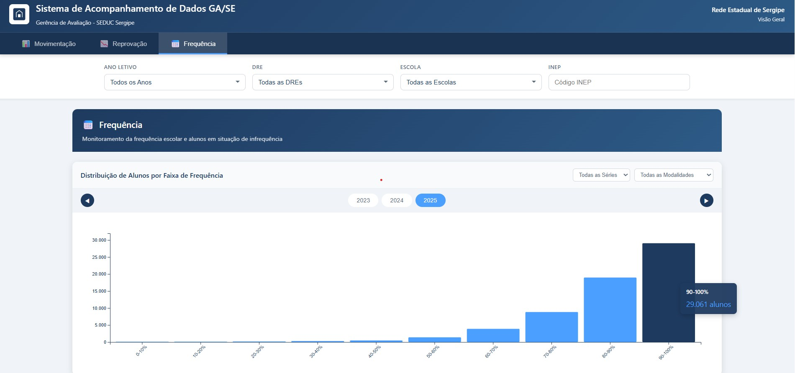

Contexto e Problema
A Gerência de Avaliação da SED Sergipe necessitava de um sistema integrado para acompanhar indicadores críticos da rede estadual: movimentação de alunos (abandonos, transferências, evasões, cancelamentos), reprovação por componente curricular e área de conhecimento, e frequência escolar. Os dados estavam disponíveis em sistemas internos, mas a consolidação e visualização para apoio à decisão exigiam uma solução centralizada e acessível aos gestores.
O desafio era integrar dados da API da SED, tratá-los de forma automatizada e disponibilizá-los em um painel web seguro, com sistema de login, para a equipe de avaliação.
Imagens do Sistema



Solução Desenvolvida
Desenvolvi o Sistema de Acompanhamento de Dados GA/SE, um painel web com sistema de login que consolida dados da rede estadual de Sergipe em três módulos principais:
- Extração via API: Dados extraídos da API da SED Sergipe, garantindo atualização a partir das fontes oficiais
- Tratamento em Python: Pipeline de processamento para limpeza, padronização e agregação dos dados antes da exibição
- Módulo Movimentação: Acompanhamento de abandonos, transferências (internas e externas), evasões e cancelamentos, com histórico temporal e detalhamento por escola
- Módulo Reprovação: Análise de rendimento escolar, reprovação por componente curricular e área de conhecimento, distribuição por tipo (média, faltas, falta de nota) e ranking de escolas
- Módulo Frequência: Monitoramento da frequência escolar e alunos em situação de infrequência, com distribuição por faixa de frequência
- Painel web com login: Interface segura com sistema de autenticação, filtros por ano letivo, DRE e escola
Fonte de Dados
- API da SED Sergipe — dados oficiais da rede estadual
- Dados de movimentação, reprovação e frequência escolar
Tecnologias Utilizadas
Resultados e Impacto
O Sistema GA/SE passou a oferecer à Gerência de Avaliação da SED Sergipe uma visão unificada e atualizada de movimentação, reprovação e frequência na rede estadual. Os gestores podem filtrar por ano, DRE e escola, acompanhar tendências ao longo do tempo e identificar rapidamente unidades com indicadores críticos — apoiando decisões baseadas em evidências para políticas de fluxo escolar e intervenções pedagógicas.